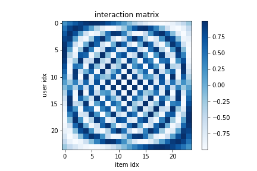
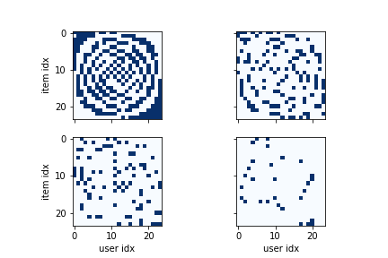

Matrix Factorization Sparsity
This post explores how implicit user-item interaction sparsity poses a challenge for matrix factorization (model-based) collaborative filtering recommender systems.
Primer
This post assumes understanding of the general recommendations machine learning (ML) problem, basic modeling approaches, and commonly used evaluation metrics. For a refresher, check out Google’s recommender systems mini-course which introduces Content-Based Filtering (CBF), Collaborative Filtering (CF) with Matrix Factorization (MF), and Deep Neural Networks (DNN). The remainder of this post focuses on MF for sparse implicit user-item interactions.
Matrix Factorization
CF with MF is a type of model-based (parametric) algorithm that decomposes $\mathbf{V}$ (user-item interaction matrix) into a product of two matrices, $\mathbf{W}$ (latent user embeddings) and $\mathbf{H}$ (latent item embeddings), by minimizing some flavor of reconstruction error. Although MF is inherently linear, it is a “tried and true” technique that is often reported to produce serendipitous recommendations.
\[\mathbf{W}\mathbf{H}^\top \approx \mathbf{V} \tag{1} \label{1}\]The algorithm exposes a hyperparameter that serves to expand or contract the dimensionality of the columns in $\mathbf{W}$ and the rows in $\mathbf{H}$. It can be set so that $\mathbf{W}$ and $\mathbf{H}$ become low-rank factors of $\mathbf{V}$, forcing a compressed encoding that captures latent structure (important information) for approximating $\mathbf{V}$.

Sparsity
At production grade scale it’s common to produce recommendations for millions of users and items based off of sparse implicit interactions, e.g., purchases, streams, etc.
Imagine a scenario with just $24$ unique items and $24$ unique users. If each user purchased 3 unique items, the number of non-zeros in this interaction matrix is $24 * 3 = 72$ while the remaining $(24 ∗ 24) - 72 = 504$ entries are all zeros. That’s a sparsity of $1 - (72 / (24 * 24)) = 0.875$. In other words, $87.5\%$ of the interaction matrix entries are zeros.
\[\begin{bmatrix} 0 & 0 & \ldots & 0\\ 0 & 1 & \ldots & 0\\ \vdots & \vdots & \ddots & \vdots\\ 1 & 0 &\ldots & 0 \end{bmatrix} \tag{2} \label{2}\]MF models are fairly resilient but extreme cases can become problematic. It’s common to subsample (users and / or items) and / or collect multi-channel interaction data (from other implicit data sources, e.g., time-on-page) in hopes of reducing sparsity. Even after applying user subsampling, authors of the noteworthy Neural Collaborative Filtering (NCF) paper reported a sparsity of $99.73\%$ on Pinterest data.
The original data is very large but highly sparse. For example, over 20% of users have only one pin, making it difficult to evaluate collaborative filtering algorithms. As such, we filtered the dataset in the same way as the MovieLens data that retained only users with at least 20 interactions (pins).
Problematic?
ML models are only as good as the data that powers them and MF is no exception to that rule. To demonstrate why sparsity is a problem, let’s consider a thought experiment.
We’ll continue with the scenario from above, $24$ users and $24$ items, but add an evil twist so that each user has purchased only one distinct item that no other user has purchased. We could reorder the users (rows of the interaction matrix) to arrive at the identity matrix, i.e., the canonical orthonormal basis $\in \mathbb{R}^{24\times24}$ that is linearly independent by definition. In other words, there isn’t much to learn as the unit vectors point in orthogonal directions.
\[\mathbf{I}_{24} = \begin{bmatrix} 1 & 0 & \ldots & 0\\ 0 & 1 & \ldots & 0\\ \vdots & \vdots & \ddots & \vdots\\ 0 & 0 &\ldots & 1 \end{bmatrix} \tag{3} \label{3}\]If we train the model with factors=24
(the hyperparameter discussed earlier), what do you think
the model learns to do? It ends up learning exactly what it’s
supposed to; its best reconstruction of the interaction (identity)
matrix and it does so by inverting the item factor matrix.
import implicit.als as mf
import numpy as np
import scipy.sparse as sp
m = mf.AlternatingLeastSquares(factors=24)
m.fit(sp.csr_matrix(np.eye(24)))
np.allclose(m.user_factors, np.linalg.inv(m.item_factors.T), atol=0.01)
# True
Although the inversion is obvious given $\mathbf{W} \in \mathbb{R}^{24\times24}$, $\mathbf{H} \in \mathbb{R}^{24\times24}$, and $\mathbf{I}_{24}$, this degenerate case highlights how helpless the model becomes with no correlation or interesting signal in the data.
Simulations
Speaking of “signals” and “correlations”, the user-item interaction matrix is exactly that. In practice, the interactions we observe follow some natural generative process. If we knew the process we wouldn’t need the model.
Let’s generate a synthetic interaction matrix by stacking sine waves. Here’s what a $1$, $2$, and $3$ Hz sine wave sampled at $1000$ Hz look like.
We layer the first $24$ harmonics (integer multiple increasing frequencies) of a $1$ Hz sine wave intentionally undersampled at $25$ Hz to produce a non-random pattern induced by the waves and their aliases.

By quantizing the amplitudes to $\{0, 1\}$, we end up with a bitmap that we’ll use as our interaction matrix. Note that entries in the interaction matrix are not limited to discrete values.
import numpy as np
interactions = np.array([
np.sin(2 * np.pi * f * np.linspace(0, 1, 25, endpoint=False))
for f in range(25)
])
interactions = np.delete(interactions, 0, axis=0)
interactions = np.delete(interactions, 0, axis=1)
interactions[interactions >= 0.0] = 1.0
interactions[interactions < 0.0] = 0.0
The spirals that emerge from the sine waves’ auto and harmonic correlations jump out because the brain is a pattern recognition (correlating) machine. Don’t you think you could get close to drawing it just by looking at it for a few seconds? The sparsity of this matrix is $51.3\%$, about half of the entries are non-zeros. Since it is noticeably correlated and not relatively sparse, this will be trivial for MF - but what if we started loosing signal, literally, by randomly zeroing out non-zero entries and thereby increasing sparsity?

Let’s run a monte-carlo simulation to investigate. We’ll make it
even easier by equipping the model with more than enough parameters by
sticking with factors=24 (from above) so that the model is free to
factorize the square interaction matrix into two other square matrices
instead of two lower-rank matrices. We’ll report performance using
standard ranking@10 evaluation metrics against a random $80\%-20\%$
train-test split.
import implicit.als as mf
import implicit.evaluation as ev
import numpy as np
import scipy.sparse as sp
n_users = 24
n_items = 24
n_factors = 24
n_sim = 24
n_el = n_users * n_items
results = []
shuffle = False
sparsities = np.arange(0.0, 0.91, 0.01)
for sparsity in sparsities:
ranking_metrics = []
for _ in range(n_sim):
i = interactions.copy()
n_z = int(n_el * sparsity)
r_z = np.random.choice(n_el, replace=False, size=n_z)
i[np.unravel_index(r_z, (n_users, n_items))] = 0
trn_i, tst_i = ev.train_test_split(sp.csr_matrix(i))
m = mf.AlternatingLeastSquares(factors=n_factors)
m.fit(trn_i, show_progress=False)
e = ev.ranking_metrics_at_k(m, trn_i, tst_i, show_progress=False)
ranking_metrics.append(e)
results.append(ranking_metrics)
Initially, when sparsity is low, the model performs incredibly well as the factorization problem is easy (correlation and coverage). As sparsity decreases, the model performance degrades as the signal in the data gets fragmented. Note that the error fans out as sparsity increases because randomness begins to obfuscate the model’s understanding of the remaining interactions.
Let’s try this again but make the problem harder by shuffling the rows of the interaction matrix that we synthesized in the previous step.
The model doesn’t perform nearly as well when sparsity is low. Similar to the previous result, the error fans out as sparsity increases, but the bands are all-around larger. This is because the row-wise shuffle operation decorrelated the signal along that axis, injecting randomness apriori.